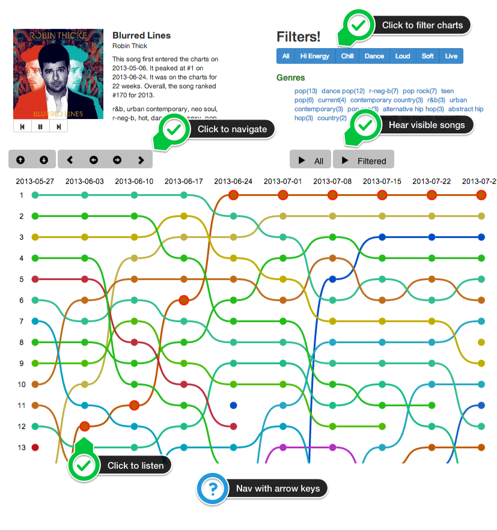

The humbly named Awesome Chart Explorer lets you explore over 50 years of awesome Billboard Charts. View how songs move up and down on the charts. Filter the charts based on genre or acoustic attributes such as energy, danceability and loudness. Listen to the charts. You can navigate through the charts using the controls or via the keyboard arrow keys.
The Awesome Chart Explorer was built at Music Hack Day NYC 2013 by @plamere. Powered by The Echo Nest, Rdio and Billboard.
